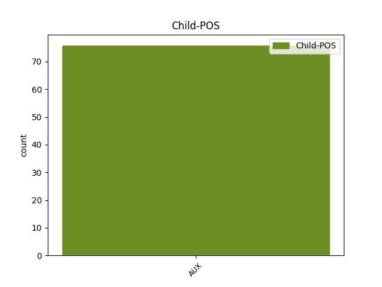

Distribution of features within this leaf


Agreement Rules sorted by frequency.
- When the dependent token is the direct object complements(comp:obj) of the head token, and the dependent token is VERB.
1 Samtidigt _ _ _ _ 0 _ _ _
2 insåg inse VERB PAST-ACT Mood=Ind|Tense=Past|VerbForm=Fin|Voice=Act 0 _ _ _
3 jag _ _ _ _ 0 _ _ _
4 hur _ _ _ _ 0 _ _ _
5 orimligt _ _ _ _ 0 _ _ _
6 det _ _ _ _ 0 _ _ _
7 var vara VERB PAST-ACT Mood=Ind|Tense=Past|VerbForm=Fin|Voice=Act 2 comp:obj _ _
8 att _ _ _ _ 0 _ _ _
9 hänga _ _ _ _ 0 _ _ _
10 upp _ _ _ _ 0 _ _ _
11 något _ _ _ _ 0 _ _ _
12 på _ _ _ _ 0 _ _ _
13 en _ _ _ _ 0 _ _ _
14 kyss _ _ _ _ 0 _ _ _
15 . _ _ _ _ 0 _ _ _
1 Jag _ _ _ _ 0 _ _ _
2 var vara AUX PAST-ACT Mood=Ind|Tense=Past|VerbForm=Fin|Voice=Act 0 _ _ _
3 tvungen _ _ _ _ 0 _ _ _
4 att _ _ _ _ 0 _ _ _
5 följa _ _ _ _ 0 _ _ _
6 efter _ _ _ _ 0 _ _ _
7 henne _ _ _ _ 0 _ _ _
8 där _ _ _ _ 0 _ _ _
9 hon _ _ _ _ 0 _ _ _
10 tvinnade tvinna VERB PAST-ACT Mood=Ind|Tense=Past|VerbForm=Fin|Voice=Act 2 mod _ _
11 trottoarerna _ _ _ _ 0 _ _ _
12 under _ _ _ _ 0 _ _ _
13 sina _ _ _ _ 0 _ _ _
14 fötter _ _ _ _ 0 _ _ _
15 . _ _ _ _ 0 _ _ _
1 Det _ _ _ _ 0 _ _ _
2 är vara AUX PRES-ACT Mood=Ind|Tense=Pres|VerbForm=Fin|Voice=Act 0 _ _ _
3 märkvärdigt _ _ _ _ 0 _ _ _
4 hur _ _ _ _ 0 _ _ _
5 lätt _ _ _ _ 0 _ _ _
6 han _ _ _ _ 0 _ _ _
7 har ha VERB PRES-ACT Mood=Ind|Tense=Pres|VerbForm=Fin|Voice=Act 2 subj _ _
8 för _ _ _ _ 0 _ _ _
9 att _ _ _ _ 0 _ _ _
10 tas _ _ _ _ 0 _ _ _
11 med _ _ _ _ 0 _ _ _
12 dom _ _ _ _ 0 _ _ _
13 där _ _ _ _ 0 _ _ _
14 ... _ _ _ _ 0 _ _ _
15 bättre _ _ _ _ 0 _ _ _
16 än _ _ _ _ 0 _ _ _
17 jag _ _ _ _ 0 _ _ _
18 själv _ _ _ _ 0 _ _ _
19 kan _ _ _ _ 0 _ _ _
20 jag _ _ _ _ 0 _ _ _
21 försäkra _ _ _ _ 0 _ _ _
22 . _ _ _ _ 0 _ _ _
1 Någon _ _ _ _ 0 _ _ _
2 rik _ _ _ _ 0 _ _ _
3 byggmästare _ _ _ _ 0 _ _ _
4 och _ _ _ _ 0 _ _ _
5 hans _ _ _ _ 0 _ _ _
6 fru _ _ _ _ 0 _ _ _
7 skulle _ _ _ _ 0 _ _ _
8 komma _ _ _ _ 0 _ _ _
9 på _ _ _ _ 0 _ _ _
10 middag _ _ _ _ 0 _ _ _
11 , _ _ _ _ 0 _ _ _
12 och _ _ _ _ 0 _ _ _
13 morbror _ _ _ _ 0 _ _ _
14 Vernon _ _ _ _ 0 _ _ _
15 hoppades hoppas VERB PAST-DPO Mood=Ind|Tense=Past|VerbForm=Fin|Voice=Act 0 _ _ _
16 få _ _ _ _ 0 _ _ _
17 en _ _ _ _ 0 _ _ _
18 jätteorder _ _ _ _ 0 _ _ _
19 från _ _ _ _ 0 _ _ _
20 honom _ _ _ _ 0 _ _ _
21 ( _ _ _ _ 0 _ _ _
22 morbror _ _ _ _ 0 _ _ _
23 Vernons _ _ _ _ 0 _ _ _
24 firma _ _ _ _ 0 _ _ _
25 tillverkade tillverka VERB PAST-ACT Mood=Ind|Tense=Past|VerbForm=Fin|Voice=Act 15 appos _ _
26 borrar _ _ _ _ 0 _ _ _
27 ) _ _ _ _ 0 _ _ _
28 . _ _ _ _ 0 _ _ _
1 Han _ _ _ _ 0 _ _ _
2 var _ _ _ _ 0 _ _ _
3 alldeles _ _ _ _ 0 _ _ _
4 ensam _ _ _ _ 0 _ _ _
5 , _ _ _ _ 0 _ _ _
6 och _ _ _ _ 0 _ _ _
7 var _ _ _ _ 0 _ _ _
8 han _ _ _ _ 0 _ _ _
9 befann befinna VERB PAST-ACT Mood=Ind|Tense=Past|VerbForm=Fin|Voice=Act 11 mod@cleft _ _
10 sig _ _ _ _ 0 _ _ _
11 hade ha VERB PAST-ACT Mood=Ind|Tense=Past|VerbForm=Fin|Voice=Act 0 _ _ _
12 han _ _ _ _ 0 _ _ _
13 ingen _ _ _ _ 0 _ _ _
14 aning _ _ _ _ 0 _ _ _
15 om _ _ _ _ 0 _ _ _
16 . _ _ _ _ 0 _ _ _
1 Jag _ _ _ _ 0 _ _ _
2 tar ta VERB PRES-ACT Mood=Ind|Tense=Pres|VerbForm=Fin|Voice=Act 0 _ _ _
3 mittplatsen _ _ _ _ 0 _ _ _
4 , _ _ _ _ 0 _ _ _
5 vilket _ _ _ _ 0 _ _ _
6 jag _ _ _ _ 0 _ _ _
7 inte _ _ _ _ 0 _ _ _
8 tycker tycka VERB PRES-ACT Mood=Ind|Tense=Pres|VerbForm=Fin|Voice=Act 2 mod@relcl _ _
9 om _ _ _ _ 0 _ _ _
10 , _ _ _ _ 0 _ _ _
11 men _ _ _ _ 0 _ _ _
12 det _ _ _ _ 0 _ _ _
13 gör _ _ _ _ 0 _ _ _
14 mig _ _ _ _ 0 _ _ _
15 inte _ _ _ _ 0 _ _ _
16 så _ _ _ _ 0 _ _ _
17 mycket _ _ _ _ 0 _ _ _
18 . _ _ _ _ 0 _ _ _
1 Ni _ _ _ _ 0 _ _ _
2 förstår förstå VERB PRES-ACT Mood=Ind|Tense=Pres|VerbForm=Fin|Voice=Act 37 reparandum _ SpaceAfter=No
3 , _ _ _ _ 0 _ _ _
4 började _ _ _ _ 0 _ _ _
5 han _ _ _ _ 0 _ _ _
6 igen _ _ _ _ 0 _ _ _
7 och _ _ _ _ 0 _ _ _
8 lyfte _ _ _ _ 0 _ _ _
9 ena _ _ _ _ 0 _ _ _
10 armen _ _ _ _ 0 _ _ _
11 från _ _ _ _ 0 _ _ _
12 armbågen _ _ _ _ 0 _ _ _
13 med _ _ _ _ 0 _ _ _
14 handflatan _ _ _ _ 0 _ _ _
15 utåt _ _ _ _ 0 _ _ _
16 så _ _ _ _ 0 _ _ _
17 att _ _ _ _ 0 _ _ _
18 han _ _ _ _ 0 _ _ _
19 med _ _ _ _ 0 _ _ _
20 sina _ _ _ _ 0 _ _ _
21 korslagda _ _ _ _ 0 _ _ _
22 ben _ _ _ _ 0 _ _ _
23 satt _ _ _ _ 0 _ _ _
24 som _ _ _ _ 0 _ _ _
25 en _ _ _ _ 0 _ _ _
26 buddha _ _ _ _ 0 _ _ _
27 , _ _ _ _ 0 _ _ _
28 predikande _ _ _ _ 0 _ _ _
29 i _ _ _ _ 0 _ _ _
30 europeiska _ _ _ _ 0 _ _ _
31 kläder _ _ _ _ 0 _ _ _
32 och _ _ _ _ 0 _ _ _
33 utan _ _ _ _ 0 _ _ _
34 lotusblomma _ _ _ _ 0 _ _ _
35 – _ _ _ _ 0 _ _ _
36 ni _ _ _ _ 0 _ _ _
37 förstår förstå VERB PRES-ACT Mood=Ind|Tense=Pres|VerbForm=Fin|Voice=Act 0 _ _ _
38 – _ _ _ _ 0 _ _ _
39 ingen _ _ _ _ 0 _ _ _
40 av _ _ _ _ 0 _ _ _
41 oss _ _ _ _ 0 _ _ _
42 skulle _ _ _ _ 0 _ _ _
43 känna _ _ _ _ 0 _ _ _
44 riktigt _ _ _ _ 0 _ _ _
45 så _ _ _ _ 0 _ _ _
46 . _ _ _ _ 0 _ _ _
1 Mrs _ _ _ _ 0 _ _ _
2 Wentz _ _ _ _ 0 _ _ _
3 hade ha AUX PAST-AUX Mood=Ind|Tense=Past|VerbForm=Fin|Voice=Act 0 _ _ _
4 satt sitta VERB PAST-ACT Mood=Ind|Tense=Past|VerbForm=Fin|Voice=Act 3 comp:aux _ _
5 ifrån _ _ _ _ 0 _ _ _
6 sig _ _ _ _ 0 _ _ _
7 tallriken _ _ _ _ 0 _ _ _
8 och _ _ _ _ 0 _ _ _
9 lutade _ _ _ _ 0 _ _ _
10 sig _ _ _ _ 0 _ _ _
11 tillbaka _ _ _ _ 0 _ _ _
12 , _ _ _ _ 0 _ _ _
13 ut _ _ _ _ 0 _ _ _
14 ur _ _ _ _ 0 _ _ _
15 ljuskretsen _ _ _ _ 0 _ _ _
16 från _ _ _ _ 0 _ _ _
17 elden _ _ _ _ 0 _ _ _
18 , _ _ _ _ 0 _ _ _
19 ett _ _ _ _ 0 _ _ _
20 stort _ _ _ _ 0 _ _ _
21 ansikte _ _ _ _ 0 _ _ _
22 som _ _ _ _ 0 _ _ _
23 glimmade _ _ _ _ 0 _ _ _
24 i _ _ _ _ 0 _ _ _
25 mörkret _ _ _ _ 0 _ _ _
26 , _ _ _ _ 0 _ _ _
27 hålor _ _ _ _ 0 _ _ _
28 i _ _ _ _ 0 _ _ _
29 stället _ _ _ _ 0 _ _ _
30 för _ _ _ _ 0 _ _ _
31 ögon _ _ _ _ 0 _ _ _
32 . _ _ _ _ 0 _ _ _
1 När _ _ _ _ 0 _ _ _
2 han _ _ _ _ 0 _ _ _
3 kom _ _ _ _ 0 _ _ _
4 hem _ _ _ _ 0 _ _ _
5 var vara AUX PAST-ACT Mood=Ind|Tense=Past|VerbForm=Fin|Voice=Act 0 _ _ _
6 han _ _ _ _ 0 _ _ _
7 inte _ _ _ _ 0 _ _ _
8 väntad vänta VERB AD-IND-SG Tense=Past|VerbForm=Part|Voice=Pass 5 comp:aux@pass _ _
9 av _ _ _ _ 0 _ _ _
10 min _ _ _ _ 0 _ _ _
11 mor _ _ _ _ 0 _ _ _
12 . _ _ _ _ 0 _ _ _
Disagree Examples:
1 Det _ _ _ _ 0 _ _ _
2 var _ _ _ _ 0 _ _ _
3 ingenting _ _ _ _ 0 _ _ _
4 annat _ _ _ _ 0 _ _ _
5 än _ _ _ _ 0 _ _ _
6 tjuvnad _ _ _ _ 0 _ _ _
7 i _ _ _ _ 0 _ _ _
8 samband _ _ _ _ 0 _ _ _
9 med _ _ _ _ 0 _ _ _
10 våldsdåd _ _ _ _ 0 _ _ _
11 , _ _ _ _ 0 _ _ _
12 kvalificerat _ _ _ _ 0 _ _ _
13 mord _ _ _ _ 0 _ _ _
14 i _ _ _ _ 0 _ _ _
15 stor _ _ _ _ 0 _ _ _
16 skala _ _ _ _ 0 _ _ _
17 , _ _ _ _ 0 _ _ _
18 och _ _ _ _ 0 _ _ _
19 de _ _ _ _ 0 _ _ _
20 kastade kasta VERB PAST-ACT Mood=Ind|Tense=Past|VerbForm=Fin|Voice=Act 0 _ _ _
21 sig _ _ _ _ 0 _ _ _
22 blint _ _ _ _ 0 _ _ _
23 in _ _ _ _ 0 _ _ _
24 i _ _ _ _ 0 _ _ _
25 det _ _ _ _ 0 _ _ _
26 – _ _ _ _ 0 _ _ _
27 vilket _ _ _ _ 0 _ _ _
28 ju _ _ _ _ 0 _ _ _
29 passar passa VERB PRES-ACT Mood=Ind|Tense=Pres|VerbForm=Fin|Voice=Act 20 mod@relcl _ _
30 bra _ _ _ _ 0 _ _ _
31 för _ _ _ _ 0 _ _ _
32 den _ _ _ _ 0 _ _ _
33 som _ _ _ _ 0 _ _ _
34 ger _ _ _ _ 0 _ _ _
35 sig _ _ _ _ 0 _ _ _
36 på _ _ _ _ 0 _ _ _
37 själva _ _ _ _ 0 _ _ _
38 mörkret _ _ _ _ 0 _ _ _
39 . _ _ _ _ 0 _ _ _
1 För _ _ _ _ 0 _ _ _
2 övrigt _ _ _ _ 0 _ _ _
3 lade lägga VERB PAST-ACT Mood=Ind|Tense=Past|VerbForm=Fin|Voice=Act 0 _ _ _
4 man _ _ _ _ 0 _ _ _
5 bara _ _ _ _ 0 _ _ _
6 märke _ _ _ _ 0 _ _ _
7 till _ _ _ _ 0 _ _ _
8 att _ _ _ _ 0 _ _ _
9 hans _ _ _ _ 0 _ _ _
10 läppar _ _ _ _ 0 _ _ _
11 hade _ _ _ _ 0 _ _ _
12 ett _ _ _ _ 0 _ _ _
13 odefinierbart _ _ _ _ 0 _ _ _
14 , _ _ _ _ 0 _ _ _
15 svävande _ _ _ _ 0 _ _ _
16 uttryck _ _ _ _ 0 _ _ _
17 , _ _ _ _ 0 _ _ _
18 någonting _ _ _ _ 0 _ _ _
19 förstulet _ _ _ _ 0 _ _ _
20 – _ _ _ _ 0 _ _ _
21 ett _ _ _ _ 0 _ _ _
22 leende _ _ _ _ 0 _ _ _
23 – _ _ _ _ 0 _ _ _
24 nej _ _ _ _ 0 _ _ _
25 , _ _ _ _ 0 _ _ _
26 inte _ _ _ _ 0 _ _ _
27 ett _ _ _ _ 0 _ _ _
28 leende _ _ _ _ 0 _ _ _
29 – _ _ _ _ 0 _ _ _
30 jag _ _ _ _ 0 _ _ _
31 minns minnas VERB PRES-DPO Mood=Ind|Tense=Pres|VerbForm=Fin|Voice=Act 3 appos _ _
32 det _ _ _ _ 0 _ _ _
33 , _ _ _ _ 0 _ _ _
34 men _ _ _ _ 0 _ _ _
35 jag _ _ _ _ 0 _ _ _
36 kan _ _ _ _ 0 _ _ _
37 inte _ _ _ _ 0 _ _ _
38 beskriva _ _ _ _ 0 _ _ _
39 det _ _ _ _ 0 _ _ _
40 . _ _ _ _ 0 _ _ _
1 det _ _ _ _ 0 _ _ _
2 märkte märka VERB PAST-ACT Mood=Ind|Tense=Past|VerbForm=Fin|Voice=Act 0 _ _ _
3 jag _ _ _ _ 0 _ _ _
4 på _ _ _ _ 0 _ _ _
5 dina _ _ _ _ 0 _ _ _
6 pyjamasbyxor _ _ _ _ 0 _ _ _
7 , _ _ _ _ 0 _ _ _
8 jag _ _ _ _ 0 _ _ _
9 tar ta VERB PRES-ACT Mood=Ind|Tense=Pres|VerbForm=Fin|Voice=Act 2 mod _ _
10 precis _ _ _ _ 0 _ _ _
11 samma _ _ _ _ 0 _ _ _
12 mått _ _ _ _ 0 _ _ _
13 som _ _ _ _ 0 _ _ _
14 förr _ _ _ _ 0 _ _ _
15 när _ _ _ _ 0 _ _ _
16 jag _ _ _ _ 0 _ _ _
17 ska _ _ _ _ 0 _ _ _
18 sätta _ _ _ _ 0 _ _ _
19 i _ _ _ _ 0 _ _ _
20 nya _ _ _ _ 0 _ _ _
21 resårer _ _ _ _ 0 _ _ _
22 . _ _ _ _ 0 _ _ _
1 Mweta _ _ _ _ 0 _ _ _
2 svarade svara VERB PAST-ACT Mood=Ind|Tense=Past|VerbForm=Fin|Voice=Act 0 _ _ _
3 , _ _ _ _ 0 _ _ _
4 med _ _ _ _ 0 _ _ _
5 sitt _ _ _ _ 0 _ _ _
6 lilla _ _ _ _ 0 _ _ _
7 skygga _ _ _ _ 0 _ _ _
8 leende _ _ _ _ 0 _ _ _
9 som _ _ _ _ 0 _ _ _
10 alltid _ _ _ _ 0 _ _ _
11 tycktes _ _ _ _ 0 _ _ _
12 växa _ _ _ _ 0 _ _ _
13 som _ _ _ _ 0 _ _ _
14 ett _ _ _ _ 0 _ _ _
15 ljus _ _ _ _ 0 _ _ _
16 som _ _ _ _ 0 _ _ _
17 blir _ _ _ _ 0 _ _ _
18 allt _ _ _ _ 0 _ _ _
19 kraftigare _ _ _ _ 0 _ _ _
20 medan _ _ _ _ 0 _ _ _
21 han _ _ _ _ 0 _ _ _
22 såg _ _ _ _ 0 _ _ _
23 rätt _ _ _ _ 0 _ _ _
24 in _ _ _ _ 0 _ _ _
25 i _ _ _ _ 0 _ _ _
26 ögonen _ _ _ _ 0 _ _ _
27 på _ _ _ _ 0 _ _ _
28 en _ _ _ _ 0 _ _ _
29 : _ _ _ _ 0 _ _ _
30 Menar mena VERB PRES-ACT Mood=Ind|Tense=Pres|VerbForm=Fin|Voice=Act 2 comp:obj _ _
31 du _ _ _ _ 0 _ _ _
32 lilla _ _ _ _ 0 _ _ _
33 Venetia _ _ _ _ 0 _ _ _
34 ? _ _ _ _ 0 _ _ _
1 I _ _ _ _ 0 _ _ _
2 den _ _ _ _ 0 _ _ _
3 känsla _ _ _ _ 0 _ _ _
4 av _ _ _ _ 0 _ _ _
5 frigjordhet _ _ _ _ 0 _ _ _
6 som _ _ _ _ 0 _ _ _
7 den _ _ _ _ 0 _ _ _
8 fysiska _ _ _ _ 0 _ _ _
9 kontakten _ _ _ _ 0 _ _ _
10 åstadkom _ _ _ _ 0 _ _ _
11 sade säga VERB PAST-ACT Mood=Ind|Tense=Past|VerbForm=Fin|Voice=Act 0 _ _ _
12 han _ _ _ _ 0 _ _ _
13 till _ _ _ _ 0 _ _ _
14 Mweta _ _ _ _ 0 _ _ _
15 : _ _ _ _ 0 _ _ _
16 Jag _ _ _ _ 0 _ _ _
17 vet veta VERB PRES-ACT Mood=Ind|Tense=Pres|VerbForm=Fin|Voice=Act 11 comp:obj _ _
18 inte _ _ _ _ 0 _ _ _
19 riktigt _ _ _ _ 0 _ _ _
20 vad _ _ _ _ 0 _ _ _
21 vi _ _ _ _ 0 _ _ _
22 talar _ _ _ _ 0 _ _ _
23 om _ _ _ _ 0 _ _ _
24 , _ _ _ _ 0 _ _ _
25 och _ _ _ _ 0 _ _ _
26 Mweta _ _ _ _ 0 _ _ _
27 svarade _ _ _ _ 0 _ _ _
28 : _ _ _ _ 0 _ _ _
29 Dig _ _ _ _ 0 _ _ _
30 ... _ _ _ _ 0 _ _ _
31 jag _ _ _ _ 0 _ _ _
32 sa _ _ _ _ 0 _ _ _
33 att _ _ _ _ 0 _ _ _
34 vi _ _ _ _ 0 _ _ _
35 väntar _ _ _ _ 0 _ _ _
36 dig _ _ _ _ 0 _ _ _
37 tillbaka _ _ _ _ 0 _ _ _
38 , _ _ _ _ 0 _ _ _
39 nu _ _ _ _ 0 _ _ _
40 . _ _ _ _ 0 _ _ _